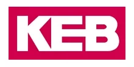

Поставляем оригинальные мотор-редукторы и приводы KEB под заказ — оригинал с гарантией производителя. Нужно дешевле — изготовим аналог собственного производства по присоединительным размерам. Цена и срок поставки — по запросу.
Оригинальные мотор-редукторы и приводы KEB — под заказ, с гарантией производителя. Пришлите модель или шильд — сообщим цену и срок поставки. Нужно дешевле — изготовим аналог (см. ниже).
| Серия | Назначение |
|---|---|
| Мотор-редукторы | соосные, плоские, конические, червячные |
| COMBIVERT | частотные преобразователи (привод) |
| Тормоза и муфты | электромагнитные |
Точные типоразмеры — по каталогу производителя. Цена и наличие оригинала — по запросу. Не оферта.
Изготавливаем аналоги редукторов и мотор-редукторов KEB под замену вышедшего из строя привода — по присоединительным размерам, валам и передаточному числу. Точную модель аналога подбираем по вашему шильду или чертежу.

| Что заменяем | Редукторы и мотор-редукторы KEB |
|---|---|
| Наш аналог | Производство Челябинск — Ч, МЧ, Ц2У, КЦ, 4МЦ2С и др. |
| Гарантия | 24 месяца |
| Подбор | По модели или шильду — за 15 минут |
Совпадают присоединительные размеры, валы и фланцы — узел встаёт на штатное место.
Вдвое выше среднерыночной.
Отгрузка со склада от 3 дней — не ждать импорт месяцами.
Пришлите фото шильда или модель — подберём аналог за 15 минут.
Оставьте контакты или пришлите модель/шильд — инженер подберёт аналог, рассчитает присоединительные размеры и пришлёт КП.
Получить КПДа, оригинальные мотор-редукторы и приводы KEB (включая преобразователи COMBIVERT) поставляем под заказ — с гарантией производителя. Срок поставки зависит от серии, типоразмера и наличия у поставщика: уточняем индивидуально после запроса по модели или шильду. Если ждать оригинал долго или нужно дешевле — предложим аналог собственного производства.
Аналог — это мотор-редуктор нашего производства (Челябинск), повторяющий присоединительные размеры, валы, фланцы и передаточное число оригинала KEB. Узел встаёт на штатное место как drop-in замена. От оригинала отличается тем, что изготавливается по присоединительным размерам, а не по фирменному каталогу KEB, доступнее по цене и быстрее по срокам отгрузки. Гарантия на аналог — 24 месяца.
Пришлите точную модель из каталога KEB либо фото шильда (таблички) с обозначением и характеристиками. По этим данным инженер определит присоединительные размеры, передаточное число и мощность и подберёт либо оригинал под заказ, либо аналог под замену — обычно за 15 минут. Можно приложить чертёж старого узла.
Цена и оригинала KEB, и аналога рассчитывается по запросу — она зависит от серии, типоразмера, исполнения и срочности. Пришлите модель или шильд, и мы сообщим стоимость и срок поставки по обоим вариантам, чтобы вы сравнили оригинал и аналог. Информация на сайте не является публичной офертой.
Габаритный аналог изготавливаем от 3 дней со склада или под заказ. Оригинал KEB поставляем под заказ — срок зависит от модели и наличия, точные сроки сообщим при запросе.
Да, мотор-редукторы рассчитаны на работу с частотным преобразователем. Сообщите требуемый диапазон регулирования оборотов — подберём двигатель и комплектацию.
Передаём паспорт изделия, сертификаты и закрывающие документы — счёт-фактуру или УПД. Работаем по договору; для постоянных и серийных клиентов согласуем индивидуальные условия.
Да. Для производителей оборудования делаем серийные поставки с резервом на складе и фиксированной ценой по договору — приводная часть вашей серии всегда в наличии.
KEB купить можно двумя путями: оригинальный KEB мотор-редуктор или привод под заказ с гарантией производителя — либо аналог собственного производства по присоединительным размерам, когда нужно дешевле и быстрее. Поставляем мотор-редукторы KEB и преобразователи KEB Combivert, подбираем замену по модели или шильду, цена — по запросу.
Оригинальные мотор-редукторы KEB, муфты Combistop и преобразователи частоты KEB Combivert поставляем под заказ с гарантией производителя. Когда нужна именно фирменная позиция, пришлите модель KEB или фото шильда — определим типоразмер, передаточное число и срок поставки.
Если важнее цена и сроки на редукторную часть, изготовим габаритный аналог KEB серии ZR по присоединительным и габаритным размерам — узел встаёт на штатное место без переделки оборудования. Подбор ведём по модели KEB или по данным шильда, переходные фланцы и спецвалы делаем по вашим чертежам.
| Серия KEB | Тип / наш аналог или решение |
|---|---|
| R (соосный) | Соосно-цилиндрический мотор-редуктор ZR |
| F (плоский) | Плоский цилиндрический мотор-редуктор ZR |
| K (конический) | Коническо-цилиндрический мотор-редуктор ZR |
| Combivert (частотник) | Поставка оригинала под заказ |
| Combistop (тормоз/муфта) | Поставка оригинала под заказ |
| Мощность | 0,12–90 кВт |
|---|---|
| Передаточное число | 1,3–7100 |
| Крутящий момент | до 15 000 Н·м |
| Исполнения | лапы, фланец, полый/сплошной вал, тормоз, IEC-двигатель |
| Срок изготовления аналога | от 3 дней |
| Поставка оригинала KEB | под заказ, цена по запросу |
KEB — известный производитель мотор-редукторов, электромагнитных тормозов и муфт, а также частотных приводов серии COMBIVERT. Соосные, плоские, конические и червячные мотор-редукторы KEB применяются в конвейерах, упаковочном и подъёмном оборудовании, а преобразователи KEB Combivert управляют скоростью и моментом привода. Мы поставляем оригинальные узлы KEB под заказ и параллельно изготавливаем аналоги, когда оригинал недоступен, идёт долго или его цена не подходит под бюджет.
Если вам важен именно оригинал — привезём KEB под заказ с гарантией производителя. Если первичны срок и цена — изготовим аналог: мотор-редуктор нашего производства повторит присоединительные размеры, валы, фланцы и передаточное число, встанет на штатное место и проработает с гарантией 24 месяца. Какой вариант выгоднее в вашем случае, подскажем после подбора по модели или шильду. Больше о замене импортных приводов — в разделе импортозамещение редукторов.
| Серии | Мотор-редукторы, COMBIVERT (приводы), тормоза и муфты |
|---|---|
| Поставка | Оригинал под заказ + аналог собственного производства |
| Цена | По запросу |
| Подбор | По модели или шильду |